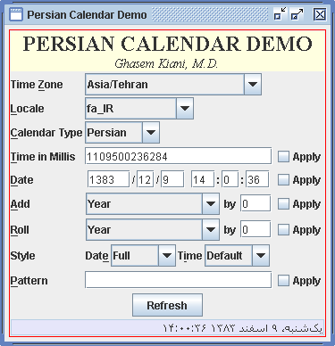
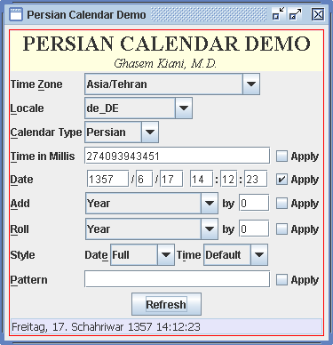
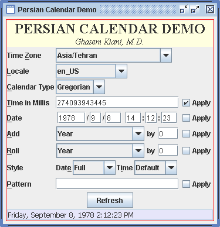
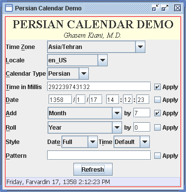
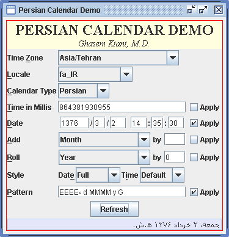
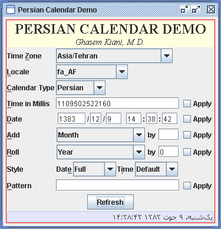
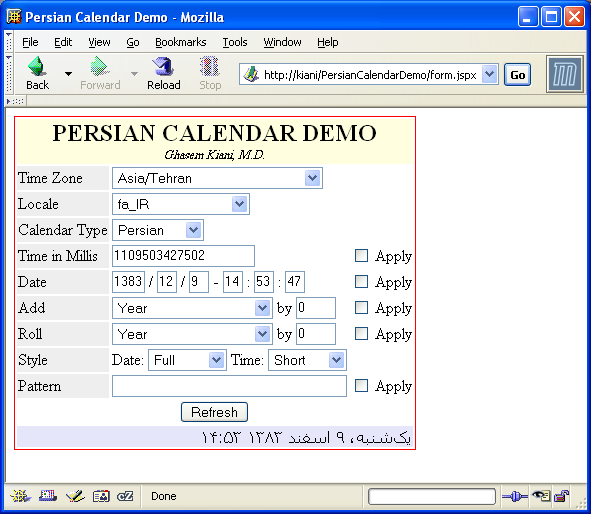
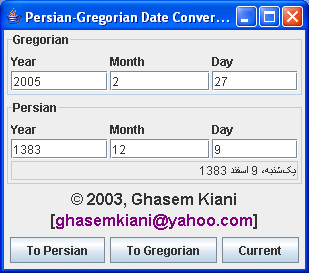

The demo directory contains batch files to run the following demos. If the batch files do not apply to your operating system, it would be a trivial task to convert them to appropriate scripts.
The class files for these demos are compiled into a JAR file, demo.jar. But JAR files in the lib directory are also needed for their execution.
The following figures show graphically how to use this demo app. You can go to demo directory and run it using PersianCalendarDemo.bat batch file. Note that when the program starts, it uses a Gregorian calendar, and you must change the calendar type to "Persian" to see the Persian calendar in action. Also note that in all demos, the month field is shown 1-based (even though it is represented internally as 0-based).

Persian Calendar Demo. Here, I have changed the calendar type to "Persian", changed the Date format style to "Full", and clicked the Refresh button. Since no date or time has been applied and no calculations performed, it shows the current date and time (at the time the program was run!).

Persian Calendar Demo. Germany German locale, showing the date of Shahrivar 17, 1357.
Persian Calendar Demo. The same date, with locale changed to Esperanto.

Persian Calendar Demo. Keeping the same time in millis (checking the corresponding check box), we can convert the date to another calendar (Gregorian in this case).

Persian Calendar Demo. Keeping the same time in millis (checking the corresponding check box), I have added 7 months (note the check box next to Add fields).

Persian Calendar Demo. Using a custom pattern.

Persian Calendar Demo. Current date formatted according to Persian (Afghanistan) locale.
This class uses a useful utility class named Bagger, which greatly simplifies creation of GUI layouts based on the java.awt.GridBagLayout.
To deploy the Persian Calendar Demo Web App, just copy the file PersianCalendarDemo.war to Tomcat's webapps directory. I have only tested Tomcat version 5.5.2.

Persian Calendar Demo Web App. This web app is functionally equivalent to the demo app presented above.
Even if you don't deploy the demo web app, you may want to have a look at the source for this web app.
This program shows the use of the SimplePersianCalendar class. You can go to demo directory and run it using PersianGregorianDateConverter.bat batch file. It should be kept in mind that in this program, year 1 B.C. is represented as 0 in the Gregorian year field, and year 1 B.H. is shown as year -1 in the Persian year field. The same difference applies for any B.C. (Gregorian) or B.H. (Persian) year. This is because of the difference in internal representation of the year in SimplePersianCalendar and java.util.Calendar classes.

Persian-Gregorian Date Converter. This demo app shows the usage of the SimplePersianCalendar class.